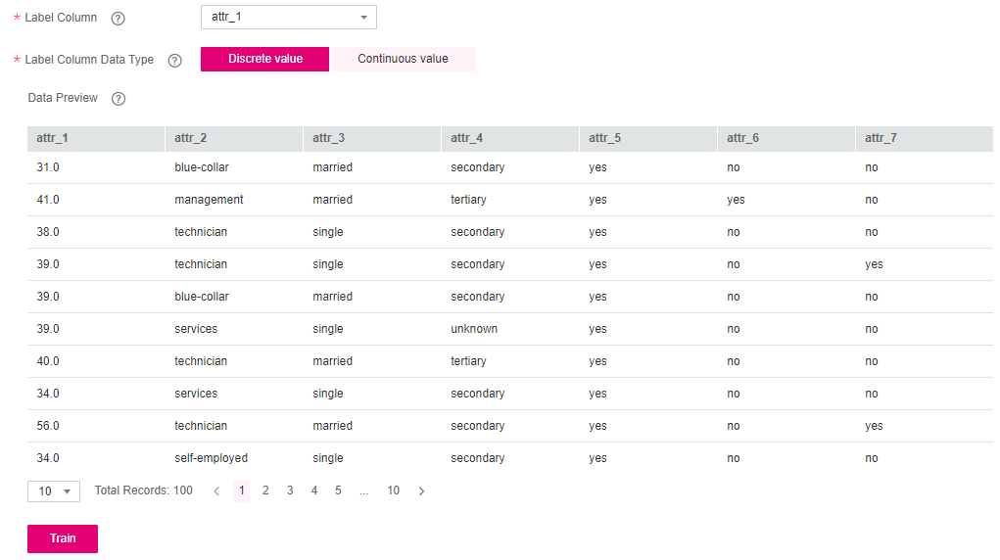

After creating a predictive analytics project, select a label column and its data type. On the Label Data tab page of the predictive analytics project, you can preview data, and select the label column and its data type. During model training, all data is used to train an inference model. The model uses the data of other columns as the input and outputs the inference value in the label column.
Procedure
- Select a label column. On the Label Data tab page, preview the data and select the training objective. Select the label column from the drop-down list of Label Column.
The label column is the output of an inference model. The training objective here is to determine whether the customer will apply for a deposit (that is, attr_7). Set Label Column Data Type to Discrete value. After the training objective is specified, click Train.
Figure 1 Data labeling page of a predictive analytics project
 - Select the data type of the label column. On the Label Data tab page, select a data type for Label Column Data Type.
- If the label column contains enumeration data, select Discrete value. The predictive analytics project will train a classification model.
- If the label column contains numeric continuous data (ensure that the column contains only digits and the training data has at least 25 different values), select Continuous value. The predictive analytics project will train a regression model.

- If you select an incorrect data type, the training will fail.
- For binary classification problems (discrete values, two optional values at most), the evaluation result has a threshold and is displayed in a curve chart after model training is complete.
- For multiclass classification problems (discrete values, more than two optional values), the evaluation result is displayed in a confusion matrix after model training is complete.
- For continuous values, the evaluation result shows mean absolute error (MAE), mean squared error (MSE), and root mean squared error (RMSE) after model training is complete.